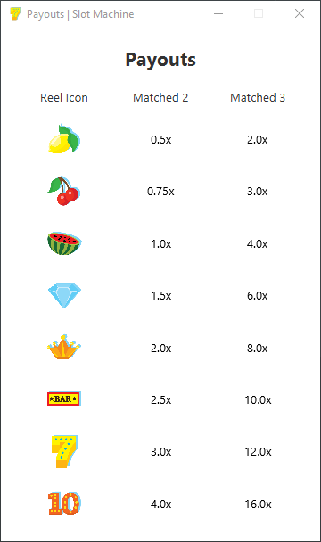

Create a JavaFX slot machine GUI with a predetermined starting cash, have buttons for the user to click and gamble with, give the user a return on average which is slightly lower than 100% so that while they should win and have their money go up, it should normally always reach game over after a while.
Create a welcome window as a splash screen for when you open the game, then load the main game window with some default images.
When the user clicks on a bet button, bet that amount of money and spin the slot machine reels. Based on how many matches of a certain icon, return a set multiplier on their bet so that they either win a multiplier of their bet, or lose all of their bet.
If money is too low for a certain bet, disable that button.
If the users money is lower than the smallest bet, display game over and play again allowing the user to restart.
Save the user's high score to add a point of comparison while playing. Write the high score to file to persist across multiple game sessions.
Add a button to display a payouts window displays all the possible matches and their respective payout multipliers.
Splash Screen

Game Window
Play Again

Payouts
